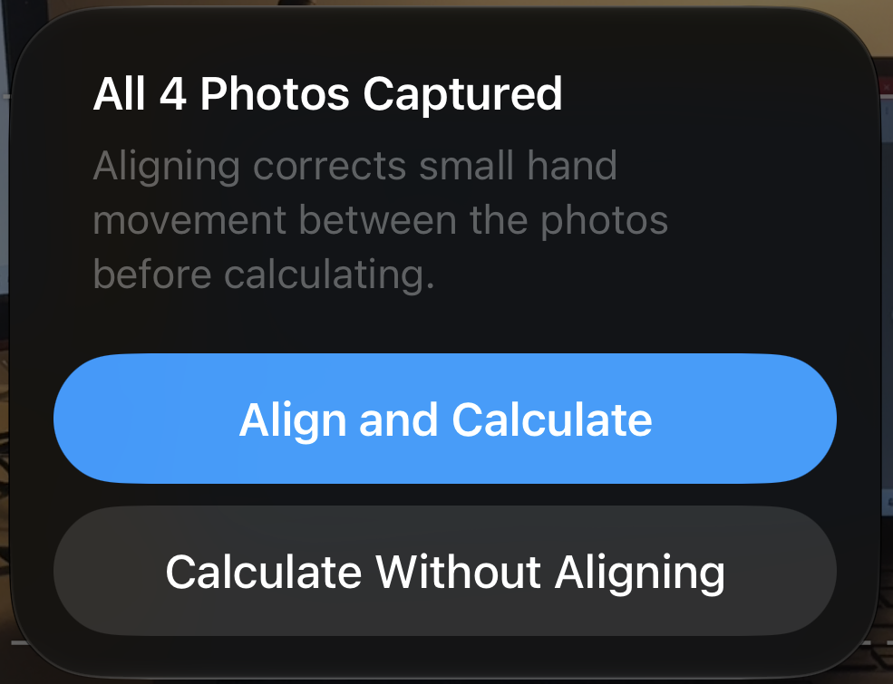
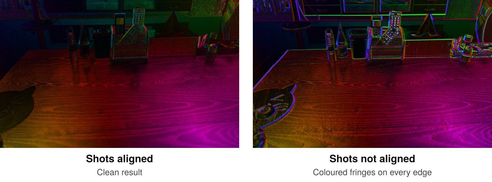

Chapter contents
User manual
Align and calculate
Capture and calculation


For a handheld iPhone, choose Align and Calculate to correct small shifts. With a tripod or a secured iPhone, choose Calculate Without Aligning if both the phone and scene stayed fixed for all four photos. It calculates from the photos as captured (Fig. 18).
If Alignment Not Confirmed appears, use Retake when the iPhone or subject moved. If Use aligned areas (…%) is offered, you can calculate only the aligned areas. Excluded areas are marked in magenta. Continue without alignment is also offered; the button may read Continue without aligning. Displaced edges can then show false polarization.
Scenes with very near and far objects can fail alignment because of parallax. Step back, choose a flatter scene or use a tripod. If photos are rejected as blurred, choose a faster shutter. Keep people, moving leaves and waves out of the measurement area when possible (Fig. 19).

